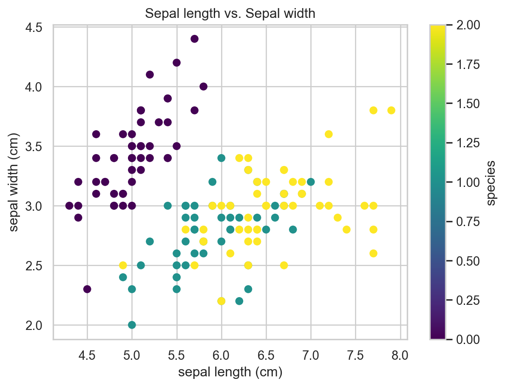

!pip install umap-learn15 UMAP (Optional)
TipLearning Objectives
- Brief introduction to UMAP
- Code to perform UMAP on data
16 UMAP Intuition
16.1 What is UMAP?
UMAP (Uniform Manifold Approximation and Projection) is another powerful unsupervised machine learning technique that helps visualize high-dimensional data in 2D or 3D. Think of it as a “smart cartographer” that creates a map of your complex data, revealing hidden patterns.
16.2 The Core Idea: Preserve Both Local and Global Structure
16.2.1 The Problem We are Solving
- Say you have cells with 20,000+ gene measurements
- You want to see which cells are similar to each other
- You want to understand both local neighborhoods AND global structure
- But 20,000 dimensions are impossible to visualize!
16.2.2 The Solution
UMAP takes your high-dimensional data and creates a 2D map where: - Similar cells stay close together (local structure preserved) - Different cells stay far apart (global structure preserved) - Both local neighborhoods AND global relationships are maintained
16.3 How UMAP Works: The Intuition
16.3.1 Step 1: Build a Graph of Relationships
Original Space (20,000+ genes):
Cell A: [Gene1=5, Gene2=10, Gene3=2, ... Gene20000=8]
Cell B: [Gene1=6, Gene2=11, Gene3=3, ... Gene20000=9]
Cell C: [Gene1=50, Gene2=100, Gene3=20, ... Gene20000=80]
UMAP creates a "friendship network":
- A and B are close friends (very similar)
- A and C are distant acquaintances (very different)
- B and C are also distant acquaintances16.3.2 Step 2: Create a 2D Map
UMAP creates a 2D layout where:
- Close friends (A and B) are placed near each other
- Distant acquaintances (A and C, B and C) are placed far apart
- The overall "social network" structure is preserved16.4 The “Manifold” Concept
16.4.1 What is a Manifold?
Think of a manifold like the surface of a balloon: - From far away, it looks like a simple sphere - Up close, you can see it is actually a 2D surface curved in 3D space - Your high-dimensional biological data might be “curved” in ways we can’t see
16.4.2 Why “Uniform”?
UMAP assumes your data is spread “uniformly” across this curved surface: - No empty regions (uniform coverage) - No overly crowded regions (uniform density) - This helps create a balanced, interpretable map
16.5 UMAP vs t-SNE: Key Differences
16.5.1 What UMAP Does Better
Preserves Global Structure: - t-SNE: Focuses mainly on local neighborhoods - UMAP: Maintains both local AND global relationships
16.6 Key Parameters to Understand
16.6.1 n_neighbors (Default: 15)
- Controls how many “friends” each cell considers
- Low (5-10): Focus on very close neighbors, creates many small clusters
- High (30-50): Consider more distant neighbors, creates fewer, larger clusters
- Default (15): Usually works well for most datasets
16.6.2 min_dist (Default: 0.1)
- Controls how tightly packed points can be in the final map
- Low (0.01): Points can be very close together (tight clusters)
- High (0.5): Points spread out more (looser clusters)
- Default (0.1): Good balance between tightness and readability
16.6.3 metric (Default: ‘euclidean’)
- How to measure distances between cells
- ‘euclidean’: Standard geometric distance (good for most data)
- ‘cosine’: Angle-based distance (good for normalized data)
- ‘manhattan’: City-block distance (good for sparse data)
16.7 UMAP vs Other Methods
16.7.1 UMAP vs PCA
- PCA: Linear method, preserves variance, good for linear relationships
- UMAP: Non-linear method, preserves local structure, good for complex relationships
16.7.2 UMAP vs t-SNE
- t-SNE: Great for local structure, slower, harder to interpret distances
- UMAP: Good for both local and global structure, faster, more interpretable
16.8 Practical Tips
16.8.1 1. Start with Default Parameters
- UMAP’s defaults work well for most biological data
- Don’t over-optimize parameters initially
16.8.2 2. Try Different n_neighbors Values
- 5-10: If you want to see fine-grained subpopulations
- 15-30: For general exploration (recommended)
- 50+: If you want to see only major cell types
16.8.3 3. Adjust min_dist for Readability
- 0.01-0.05: If points are too spread out
- 0.1-0.3: Default range (recommended)
- 0.5+: If clusters are too tight
16.8.4 4. Use Multiple Runs
- UMAP has some randomness
- Run multiple times to ensure results are consistent
- Use
random_stateparameter for reproducible results
16.8.5 5. Validate with Biology
- Always check if UMAP results make biological sense
- Compare with known cell type markers
- Look for expected developmental trajectories
16.9 Summary
UMAP is like a smart cartographer who: 1. Studies your high-dimensional data (20,000+ genes/proteins) 2. Identifies both local neighborhoods AND global relationships 3. Creates a beautiful 2D map that preserves both types of structure 4. Reveals hidden patterns you couldn’t see before
The key insight: UMAP preserves both local and global structure - cells that are similar stay close together, while the distances between different cell types remain meaningful.
This makes UMAP perfect for biologists who want to understand the complete structure of their complex, high-dimensional data - from individual cell relationships to overall tissue organization!
Remember: UMAP is a tool for exploration and visualization, not a replacement for careful analysis!
16.10 Hands-on with UMAP
The way to use UMAP is similar to how we did tSNE.
import numpy as np
import pandas as pd
from sklearn import datasets
from sklearn.preprocessing import StandardScaler
import umap
import matplotlib.pyplot as plt
import seaborn as sns
sns.set(style="whitegrid") # nice simple plots
iris = datasets.load_iris()
X_iris = iris.data # 150 samples, 4 features (sepal/petal lengths/widths)
y_iris = iris.target # species labels (0,1,2)
labels_iris = iris.target_names
# create a data frame for easier viewing
df_iris_simple = pd.DataFrame(X_iris, columns = iris.feature_names)
df_iris_simple['species'] = iris.target
df_iris_simple['species_name'] = df_iris_simple['species'].map( {0:'setosa', 1:'versicolor', 2:'virginica'} )
# display basic information
print(df_iris_simple.head)
# scatter plots
plt.figure()
plt.scatter(X_iris[:,0], X_iris[:,1], c = iris.target, cmap='viridis')
plt.xlabel(iris.feature_names[0])
plt.ylabel(iris.feature_names[1])
plt.title('Sepal length vs. Sepal width')
plt.colorbar(label='species')
plt.show()
# Standardize features
scaler = StandardScaler()
X_iris_scaled = scaler.fit_transform(X_iris)
# Run UMAP
umap_model = umap.UMAP(n_neighbors=15, min_dist=0.1, n_components=2, random_state=42)
embedding_iris = umap_model.fit_transform(X_iris_scaled)
# Put into DataFrame for plotting
df_iris = pd.DataFrame({
"UMAP1": embedding_iris[:, 0],
"UMAP2": embedding_iris[:, 1],
"species": [labels_iris[i] for i in y_iris]
})
plt.figure()
sns.scatterplot(data=df_iris, x="UMAP1", y="UMAP2", hue="species", s=60)
plt.title("UMAP on Iris data")
plt.legend(loc="best")
plt.show()<bound method NDFrame.head of sepal length (cm) sepal width (cm) petal length (cm) petal width (cm) \
0 5.1 3.5 1.4 0.2
1 4.9 3.0 1.4 0.2
2 4.7 3.2 1.3 0.2
3 4.6 3.1 1.5 0.2
4 5.0 3.6 1.4 0.2
.. ... ... ... ...
145 6.7 3.0 5.2 2.3
146 6.3 2.5 5.0 1.9
147 6.5 3.0 5.2 2.0
148 6.2 3.4 5.4 2.3
149 5.9 3.0 5.1 1.8
species species_name
0 0 setosa
1 0 setosa
2 0 setosa
3 0 setosa
4 0 setosa
.. ... ...
145 2 virginica
146 2 virginica
147 2 virginica
148 2 virginica
149 2 virginica
[150 rows x 6 columns]>

Quick tips:
n_neighbors(default ~15): how many neighbors UMAP uses to learn local structure.Smaller => captures very local structure (more fragmentation), larger => more global structure.
min_dist(default ~0.1): how tightly points are packed in the low-dimensional space. Smaller => tighter clusters; larger => more spread out.Always standardize or log-transform expression data before UMAP (depending on data type).
Try different random_state values or parameters to see what changes.
Exercises for learners:
Change
n_neighborsto 5 and then to 50 and observe how the plot changes.Change
min_distto 0.01 and 0.8 and observe clustering differences.Replace synthetic data with a small real gene-expression matrix and try the pipeline: counts -> log1p -> StandardScaler -> UMAP.
16.11 Summary
TipKey Points
- A brief introduction to UMAP